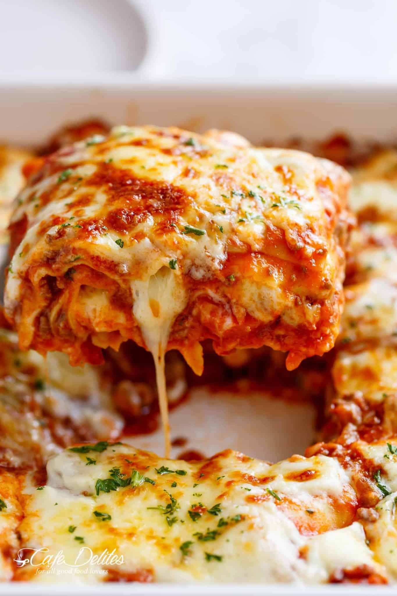

Lasagna

Description
This is my mum's famous lasagna recipe, and hands down the best lasagna I've ever had. She learnt how to
cook from her Italian friends when she lived in NYC, adjusting the recipe over the years to perfect it
The most important thing about this recipe is the sauce. It's rich with flavour and texture, really pulling
the whole dish together.
Ingredients
- 1 Tbsp olive oil
- 1 onion, finely chopped
- 1 carrot, finely diced
- 4 cloves garlic, minced
- 700g ground beef mince
- 300g ground pork mince
- 700g passata
- 410g crushed tomatoes
- 3 heaped Tbsp tomato paste
- 2 beef bouillon cubes
- 1 tsp dired basil
- 1/2 tsp sugar
- salt and pepper to tast
Instructions
-
Heat oil in a large pot, then add in the onion and carrots and cook for 10 minutes. Add in the garlic
and saute for about 1 minute
- Add beef and pork and cook while breaking it up with the end of your spoon, until browned
-
Pour in the passata, crushed tomnatoes, tomato paste, crushed bouillon and dried herbs. Mix well to
combine and bring to a gentle simmer. Season with desired amount of salt and pepper. Cover and cook for
about 30 minutes.
- Adjust salt, pepper and dried herbs to taste